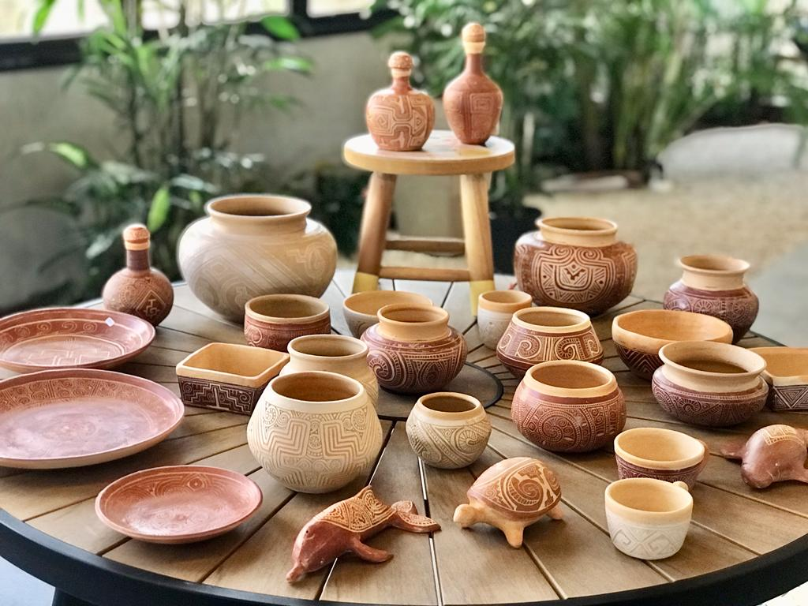
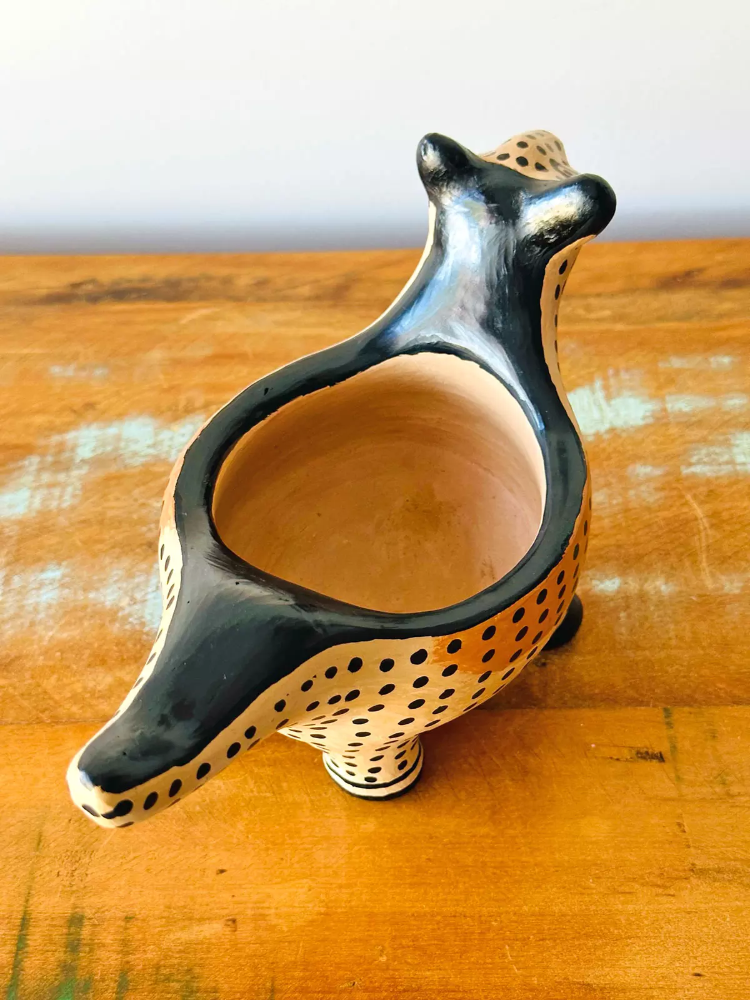

Cerâmica e Olaria
A cerâmica indígena brasileira é uma tradição milenar, feita artesanalmente com argila local. Cada grupo utiliza técnicas próprias para criar utensílios, instrumentos e objetos ritualísticos, frequentemente decorados com padrões que representam sua identidade cultural. A cerâmica tem papel essencial na vida cotidiana e na preservação de saberes ancestrais, além de ser uma importante fonte de troca entre comunidades. Apesar de influências externas, muitas etnias mantêm suas práticas tradicionais de olaria.
Cerâmica Marajoara
A cerâmica marajoara, produzida pelos índios do Marajó entre 1000 e 1250 d.C., é famosa por seus objetos utilitários e decorativos, como urnas funerárias, vasilhas, estatuetas e brinquedos. Os artefatos apresentam uma grande variedade de formas e padrões de decoração, incluindo figuras antropomórficas e zoomórficas. A cerâmica é caracterizada pelo uso de pintura vermelha ou preta sobre fundo branco, com técnicas que combinam cores naturais como urucum, caulim e jenipapo. Um destaque é o uso de técnicas como o champlevé, que cria desenhos em relevo. Além disso, os artefatos eram temperados com materiais para aumentar sua resistência, como cinzas e conchas. As peças eram queimadas em fogueiras a céu aberto e envernizadas para um acabamento lustroso. Os objetos mais elaborados eram usados em rituais e funerais, enquanto os do cotidiano tinham decoração mais simples. A cerâmica marajoara inspirou a arte brasileira, mas seu resgate é dificultado por inundações e roubos.

A cerâmica Tapajônica
A cerâmica tapajônica é de fato o artesanato mais antigo do povo da região do Tapajós, alguns testes realizados nos EUA pela pesquisadora Anna Roosevelt, comprovam que foram produzidas há mais de seis mil anos, desde esse tempo os habitantes desta região já faziam peças como vaso de gargalo, vaso de cariátides e outros utensílios de suas necessidades. As cerâmicas tapajônicas têm por características os elementos antropozoomórficos (mistura de corpos humanos e animais ) que exaltam a fauna brasileira. A junção de argila e cauxixi (um tipo de esponja presente nos rios da região), promove na cerâmica artesanal características similares à porcelana como durabilidade e leveza.

Cerâmica Waurá
O povo Waurá se autodenomina Waujá e habita o Parque Indígena do Xingu (MT) e destaca-se pela singularidade de sua cerâmica, pintada com pigmentos naturais pelas artesãs da etnia. De acordo com a fascinante cosmologia desse povo, foi uma grande cobra-canoa (Kamalu Hai) que os ensinou a arte oleira, vindo até a comunidade com panelas pintadas nas costas e, antes de ir embora, defecando argila no rio Batovi. Essas cerâmicas em forma de animais ou usadas como utensílios domésticos materializam o vínculo entre os animais, as coisas, os humanos e os seres extra-humanos contado no Mito da Grande Cobra-canoa.
